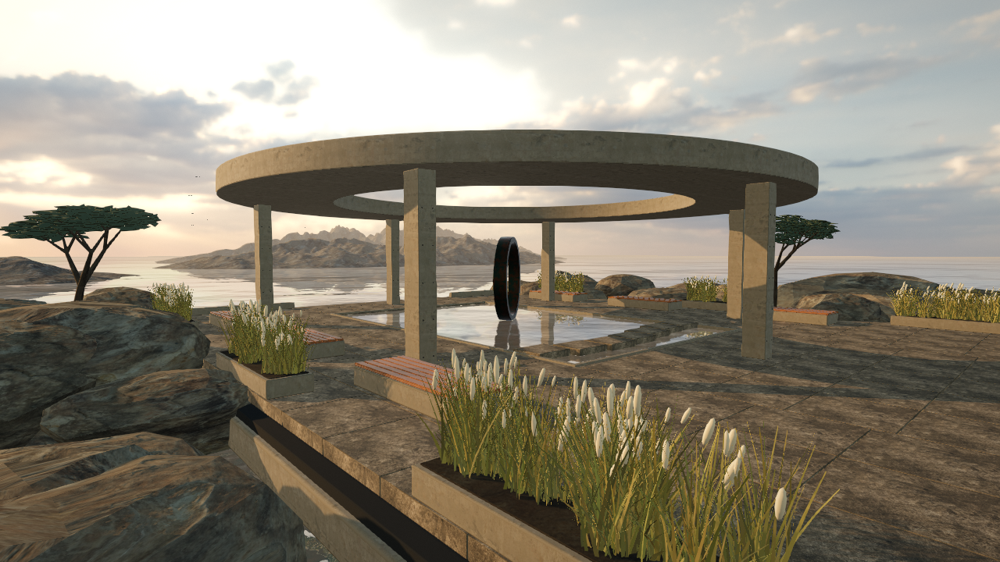
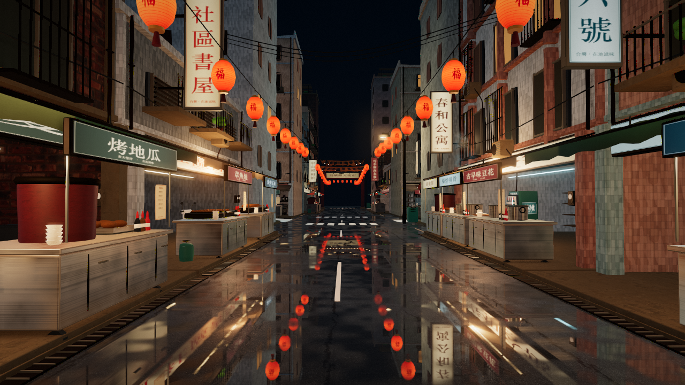
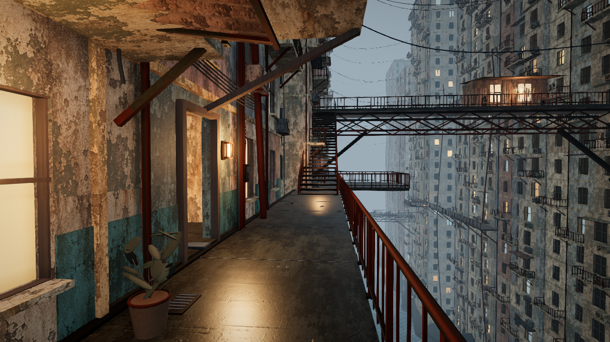
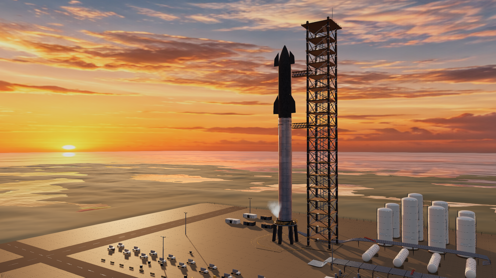
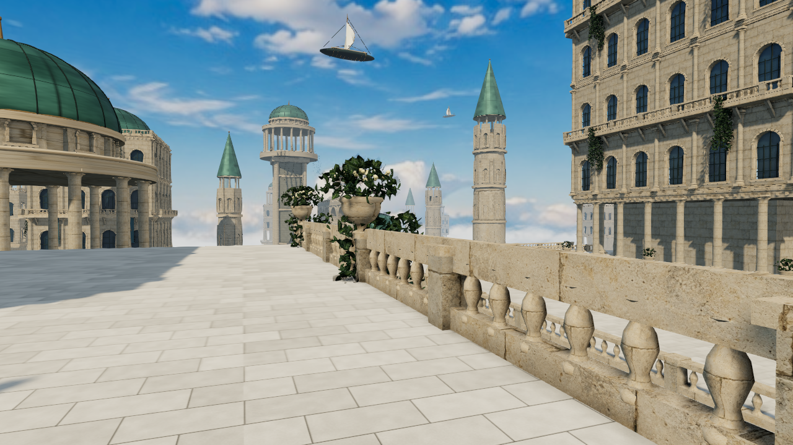
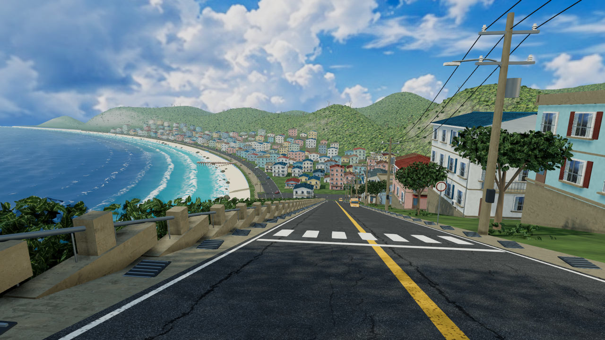
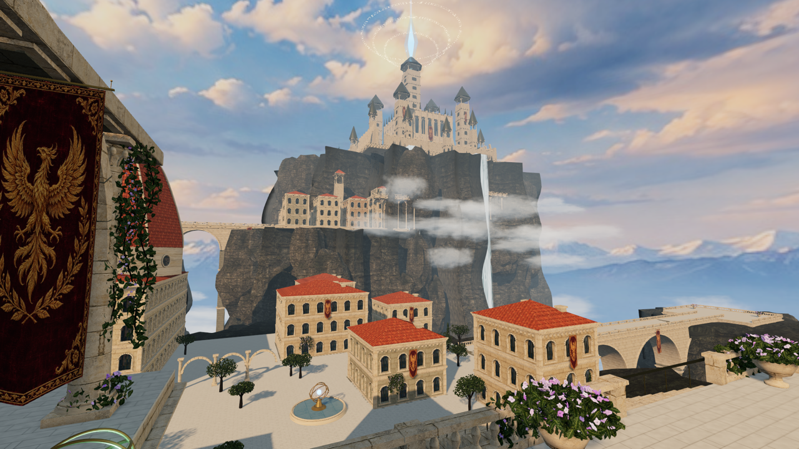
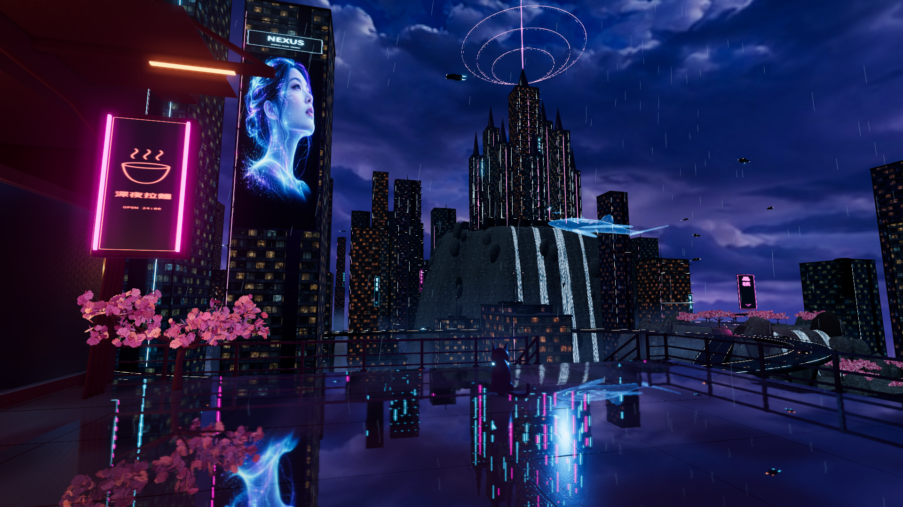
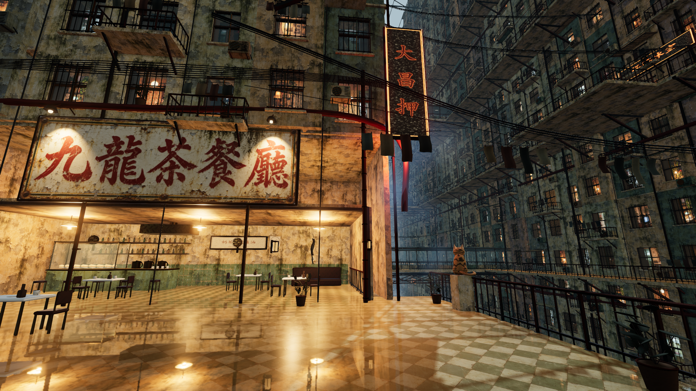
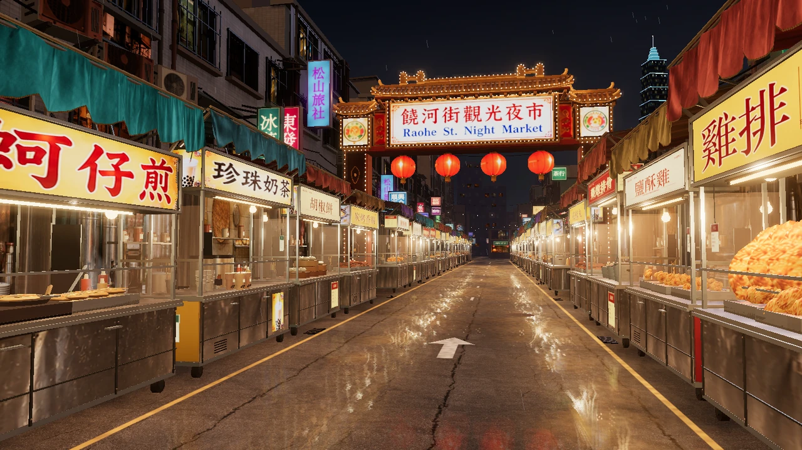

Somewhere to linger.
選一處風景，暫時離開日常。

01 / COASTAL MUSEUM
AFTERLIGHT
餘光美術館
在海風與落日之間，留一會。
製作模型 · GPT 6 Astra

02 / TAIWAN NIGHT MARKET
NIGHTFALL
夜市未眠
沿著燈籠與招牌，走進雨後的夜市。
製作模型 · GPT 6 Astra

03 / VERTICAL CITY
VERTIGO
懸城
天空與海之間，燈還亮著。
製作模型 · GPT 6 Astra

04 / COASTAL LAUNCH SITE
IGNITION
向天
在海風與倒數之間，按下通往天空的開關。
製作模型 · GPT 6 Astra

05 / A CITY ABOVE THE CLOUDS
AERIE
雲上城
走過空中長廊，在天空與石之間停留。
製作模型 · GPT 6 Astra

06 / A SUMMER BY THE SEA
SUMMERTIDE
夏潮
沿著海風，一路向下。把夏天留在這片海灣。
製作模型 · GPT 6 Astra

07 / A RENAISSANCE ENCHANTED
AURELIA
曦光城塞
循著花影與鐘聲，走進光與魔法之間。
製作模型 · GPT 6 Astra

08 / SOMEWHERE AFTER MIDNIGHT
NEO TAIPEI
新台北
在霓虹與雲霧之間，最後一盞燈還亮著。
製作模型 · GPT 6 Astra

09 / A LITTLE LIGHT, STILL ON
KOWLOON
九龍茶餐廳
一盞奶茶，一座城。穿過天橋，燈火就在轉角。
製作模型 · GPT 6 Astra

10 / RAOHE STREET NIGHT MARKET
RAOHE
饒河街夜市
穿過牌樓，沿著攤燈映亮的濕路逛夜市。
製作模型 · GPT 6.2 Astra（ULTRA）